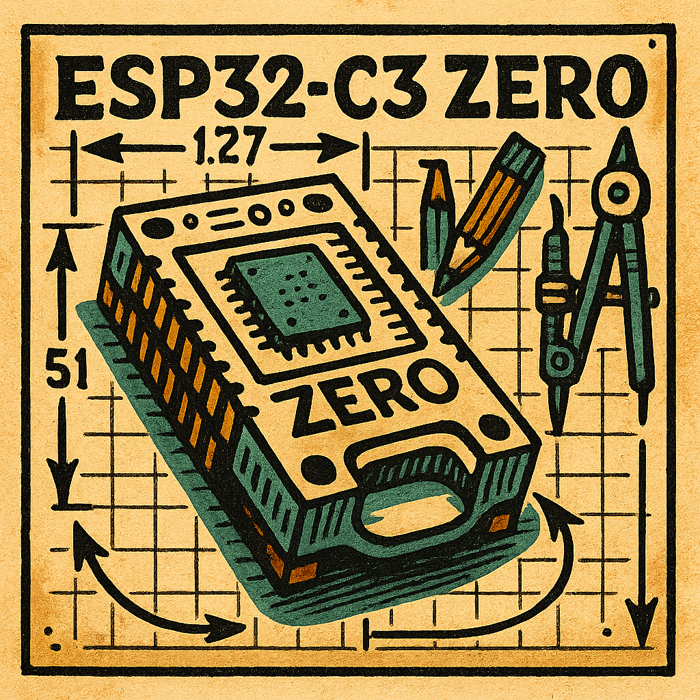

Assessment Task 3

Mission Brief
The ESP32-C3 Zero Microcrontroller is a light and portable unit that is used for a variety of
projects; The design class teams were asked to make a secure case that was functional, allowed for
ventilation and had button, port and pin access...
3 prototypes were created per student.
The first prototype was a simple, open design with holes for ventilation and lots of access,
the second was a remeasured design with a clip on lid and the third was a sleek, compact case that was functional.
Each prototype was tested for durability, functionality and ease of use, with feedback
from peers and instructors. The final design was chosen based on its balance of aesthetics,
functionality and user-friendliness from the group.
Explore the prototypes below: